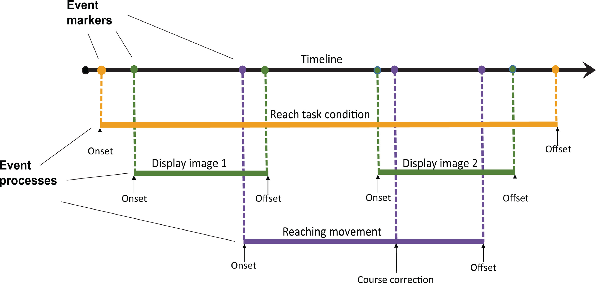

Linking brain, body, behavior, and experiment
Organize experiments so that events are reported
Annotate your data so everyone can understand the details
Use and modify the HED tools ecosystem, which is open source
Use and modify the HED tools ecosystem, which is open source